SAN BLAS, GUNA YALA
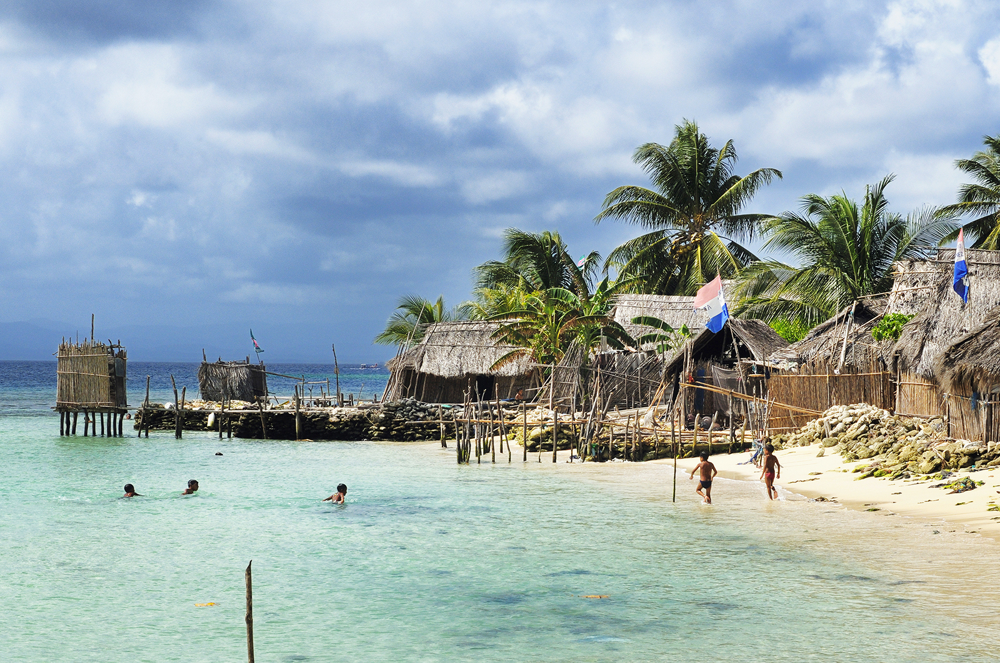
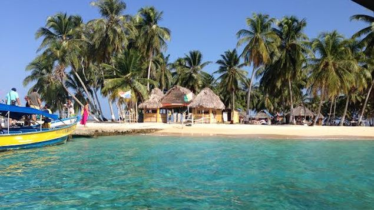
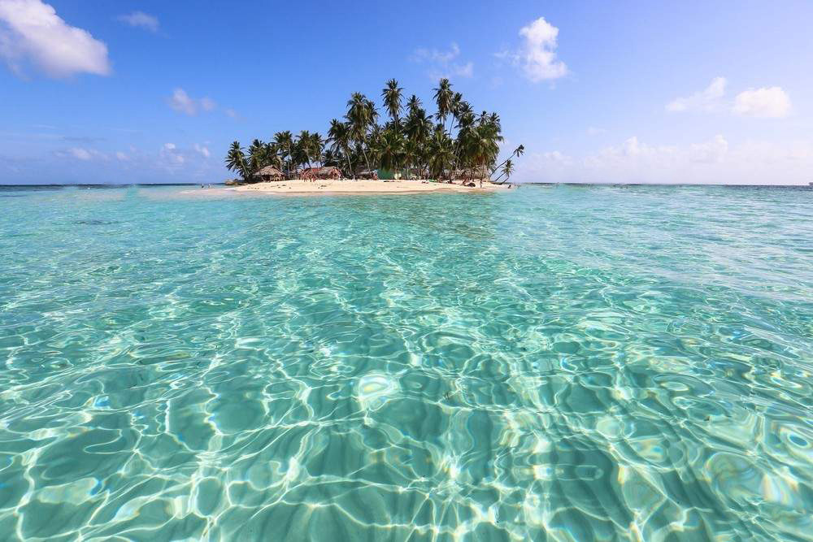
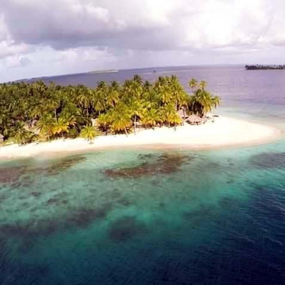

62 - 86F (17 - 30C)
What To Do

Previously known as "Kuna Yala", Guna Yala is an indigenous territory located to the northeast of Panama, with more than 365 islands to visit. It is the home of the Guna indigenous group, who have mantained their culture and traditions, as well as the natural wealth of the area. Tourists may choose between hotel lodgings or the ecofriendly lodgings built by the locals. Restaurants offer traditional dishes, mostly seafood. Diving, swimming, enjoying the sun and relaxing amidst the beautiful surroundings are some of the visitors' favorite activities. The most common way to get around in the archipielago is by sailing between the islands, but you may also fly from Panama City to one of the local airports in San Blas.
BOCA DEL DRAGO, BOCAS DEL TORO
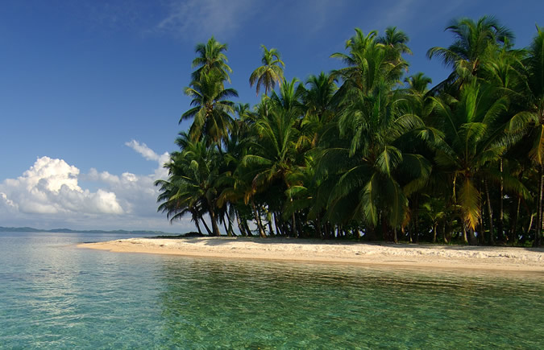
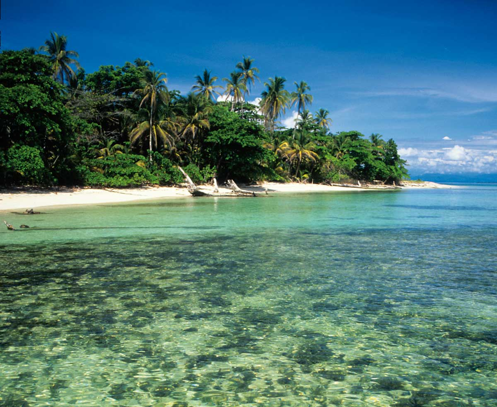
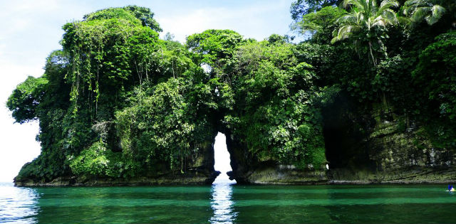
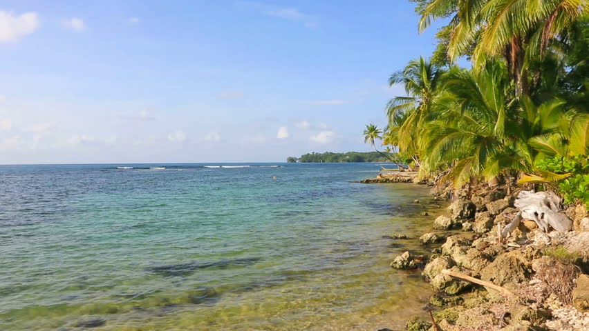
64 - 82 F (18 - 28 C)
What To Do

Boca del Drago, located a short distance from the center of Isla Colon, is one of the usual stops for boats leaving from Bocas Town. It is a peaceful beach surrounded by a beautiful landscape. There are cabins for rent and restaurants serving savory Caribbean cuisine dishes.
ISLA GRANDE
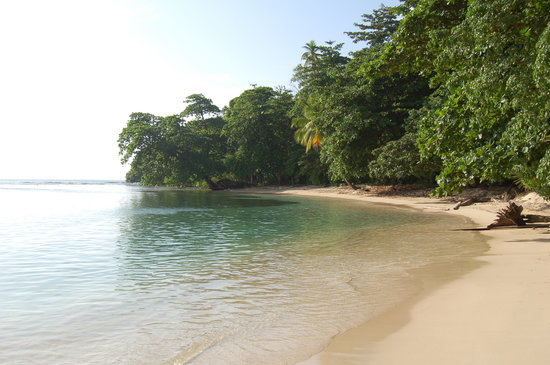
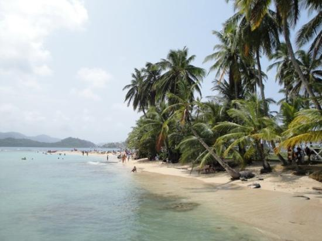
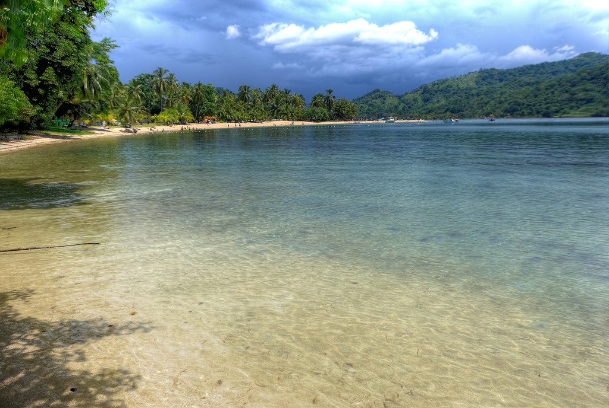
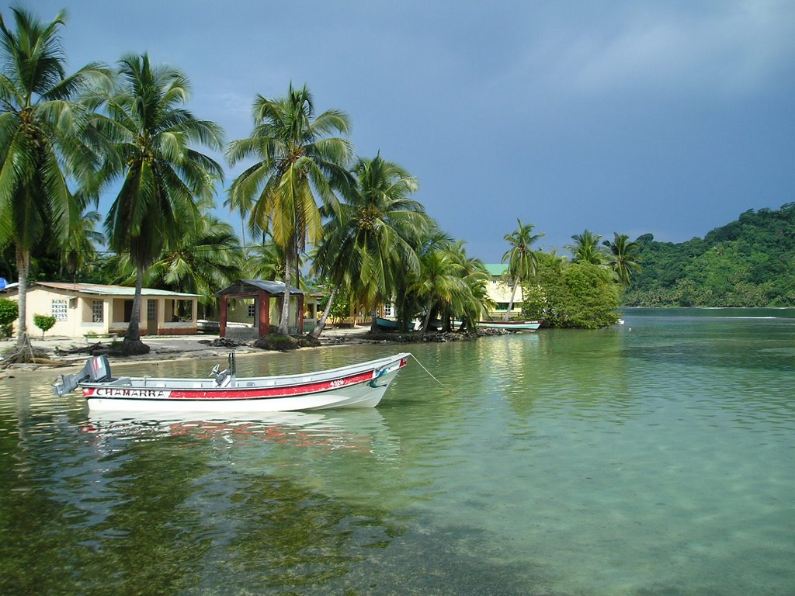
62 - 90 F (17 - 32 C)
What To Do